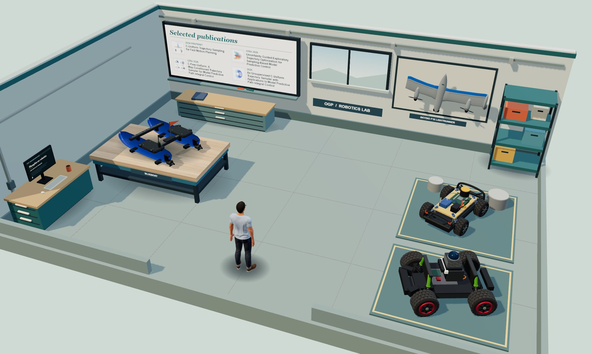
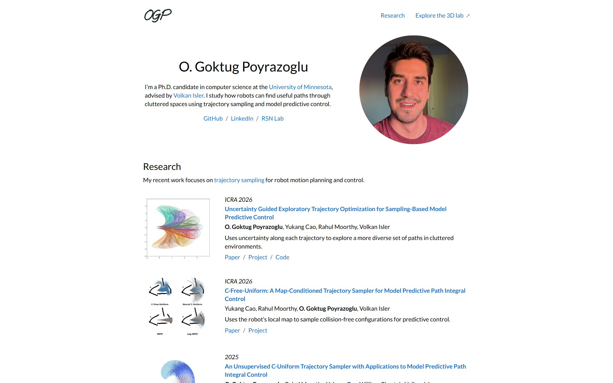

Welcome.
Thanks for stopping by.
ScrollI’m Goktug Poyrazoglu.
On my papers, I’m O. Goktug Poyrazoglu.
About me
I’m a Ph.D. candidate in computer science at the University of Minnesota, advised by Volkan Isler.
I study how robots find useful paths through cluttered spaces.
My tools are trajectory sampling and model predictive control.
Selected work
Where to next?

Interactive 3D Robotics lab Walk around my lab: the publications whiteboard, the BlueBoat, the Skydio F10, the F1TENTH racer, the AlphaTruck, and my blog. Enter the lab
One page Classic website Read my bio and selected publications, with links to papers, projects, and code. Open the classic site